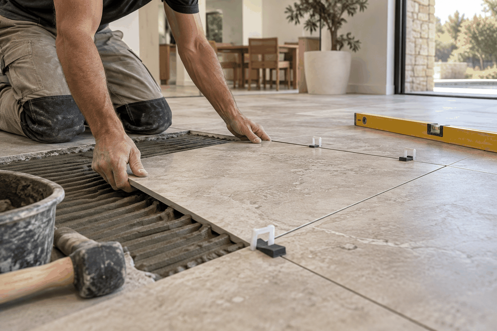

Tiling Adelaide
Tiling services in Adelaide — walls, floors, wet areas and outdoors.
A tiled surface is only as good as what is underneath it. Ellis Services Group handles tiling across Adelaide: bathrooms and ensuites, kitchen splashbacks, laundries, living floors, and outdoor areas including alfresco and pool surrounds.

Most tiling problems that show up in Adelaide homes — drummy tiles, cracked grout, a floor that never quite sat flat — trace back to the substrate, the movement joints, or a wet area that was tiled before it was properly waterproofed. Whether you find a tiler through a directory or a neighbour's recommendation, tiling Adelaide homes comes down to the same two questions: what is going under the tile, and who is accountable for what sits beneath it.
Reactive clay soils, hot dry summers and cool wet winters all move a substrate here — which is why preparation and movement joints matter more than the tile you pick off the shelf. This page covers where tiling sits in a project, how to choose a tile that suits the room, when a repair is enough and when it isn't, and what the work typically involves.
Where tiling fits in your project
Waterproofing comes first in wet areas
In any wet area, the membrane goes down before a single tile does. Tiling over an untested membrane is the most expensive shortcut in a renovation, because the only way to fix it later is to remove the tiles. If your job involves a bathroom, shower or laundry floor, read about waterproofing before tiling.
Substrate and screed — the part that decides the finish
AS 3958:2023, Installation of ceramic and stone tiles, is the Australian Standard covering ceramic and stone tile installation, including substrate preparation, adhesive fixing and grouting. It exists because the substrate governs the result: a wall that is out of plane, a floor without correct falls, or a substrate that still moves will telegraph through the finished surface no matter how good the tile is. Levelling, priming and movement joints are not optional extras — they are what make the finish last.
Not sure whether your job needs a membrane before the tile? Tell us the room and what you are seeing, and we will confirm which trade goes in first — before you book anyone. Ask about a tiling quote →
Tiling by room
Bathroom and ensuite tiling
Bathrooms concentrate every difficulty in one room: wet areas, falls to the waste, penetrations for taps and wastes, and junctions that need silicone rather than grout. Large-format wall tiles are popular because they reduce grout lines, but they are less forgiving of an out-of-plane substrate and need the right adhesive and trowel. For the wet-area side of the same room, see bathroom waterproofing Adelaide.
Kitchen splashbacks
A splashback is the most visible tile work in most houses, so set-out matters more than anywhere else. Decide where the cut tiles land before fixing starts, particularly around windows, rangehoods and power points. Subway and finger tiles suit most Adelaide kitchens; a stack bond gives a more contemporary line but shows any substrate wobble.
Laundry and wet-area floors
Laundry floors take standing water, detergent and the vibration of appliances. Fall to the waste, a waterproof substrate, and a grout that tolerates regular wetting matter more than the tile choice itself.
Living areas and hallways
Large-format porcelain over a properly levelled substrate gives the cleanest result. In open-plan areas, plan movement joints at the transitions and at doorways — long uninterrupted runs are where tenting and lifting usually start.
Outdoor areas — patios, alfresco and pool surrounds
Outdoor tiling in Adelaide has to handle thermal movement and, in pool surrounds, constant wetting. Choose a tile rated for exterior use, use a suitable adhesive and grout for the exposure, and make sure the substrate falls away from the house rather than toward it.
Choosing a tile — what actually matters
| Space | Tile type | Why it suits | Watch out for |
|---|---|---|---|
| Bathroom floor | Porcelain, textured or matt | Low water absorption, better grip when wet | Polished finishes become slippery |
| Bathroom wall | Glazed porcelain or ceramic | Easy to clean, wide range of formats | Large formats need a very flat wall |
| Kitchen splashback | Glazed ceramic or subway | Light, easy to cut around services | Set-out at windows and rangehoods |
| Laundry floor | Porcelain, matt | Tolerates standing water and detergents | Falls to waste must be built in |
| Living / hallway | Large-format porcelain | Few joints, clean continuous line | Needs movement joints on long runs |
| Alfresco / patio | Exterior-rated porcelain or stone-look | Handles thermal movement | Check the rating is for exterior use |
| Pool surround | Exterior porcelain, slip-rated | Stays grippy when wet, resists chlorine | Confirm the slip rating suits the use |
Porcelain vs ceramic
Porcelain is denser and absorbs far less water, which makes it the safer pick for wet areas and outdoors. Ceramic is lighter and easier to cut, which suits splashbacks and walls. Both are legitimate — the decision is about where the tile is going, not which is "better".
Slip ratings for outdoor and wet floors
Australian tiles carry slip classifications, commonly expressed as P ratings for pendulum testing and R ratings for ramp testing. Which classification you need depends on how the space is actually used — a sheltered alfresco is not the same as an uncovered pool surround. Confirm the rating against your specific area rather than assuming a single number covers every outdoor job.
Grout and silicone — the joints that fail first
Grout cracks at changes of plane; that is why internal corners and the junction between a bath and a wall get silicone, not grout. Silicone is a maintenance item with a shorter life than the tile around it — expect to renew it periodically. Re-siliconing is the cheapest thing you can do to extend the life of a tiled wet area.
Tile repairs, regrouting and replacement
A few loose or cracked tiles
Isolated damage can usually be lifted and replaced. The practical difficulty is matching: if you do not have spare tiles from the original job, sourcing an identical replacement years later is often the harder part of the work.
Widespread drummy or lifting tiles
Tiles that sound hollow over a large area, or that have started to tent or lift, generally point to a substrate or movement-joint problem rather than a tile problem. Patching individual tiles will not hold.
When the problem is under the tile
If tiles keep lifting in one spot, or staining keeps returning, the cause is usually below the surface — a substrate that has moved, or a wet area where the membrane has failed. In that case see bathroom waterproofing in Adelaide before re-tiling, or the same problem will come back under the new tiles.
What tiling costs in Adelaide
Tiling cost moves with the tile format (large-format and mosaic take longer), the condition of the substrate, how much levelling or screeding is needed, the amount of cutting and set-out complexity, and whether old tiles have to come up first. Supply of tiles is usually quoted separately from labour. Ask for a written scope that separates strip-out, substrate preparation, supply, fixing and grouting — that is the only way to compare two quotes meaningfully. Treat published figures as indicative only.
Tiling FAQs
Can you tile over existing tiles?
Where the existing surface is sound, well-bonded and flat, yes. It raises the floor level, which affects door clearances and transitions, and it does not fix any substrate problem underneath.
How long before we can use the floor?
Light foot traffic is usually possible after the grout has set; full use, including heavy furniture, comes later. Your tiler will confirm timings for the adhesive and grout used.
Do you supply tiles or do we?
Either. Supply can be included in the scope, or you can nominate tiles you have selected. Confirm who is responsible for quantities and for any breakage allowance.
Can you match existing tiles for a repair?
Often yes if the tile is still in production, or if you have spares. Discontinued lines can sometimes be matched closely but not exactly.
Talk to Ellis about tiling in Adelaide
Ellis Services Group covers wall and floor tiling, wet areas, splashbacks and outdoor work across Adelaide — and handles waterproofing as well, so wet-area jobs run as one coordinated scope.
We operate 24/7. Service availability depends on the service, the location and current scheduling. Nothing on this page is a commitment of availability.
Phone: 0425 170 688
Address: 63 Pirie St, Adelaide SA 5000
GET A QUOTE FOR YOUR TILING JOB
Or contact Ellis about a tiling job directly. You can also see our services across Adelaide, and there is more detail on our common questions page.